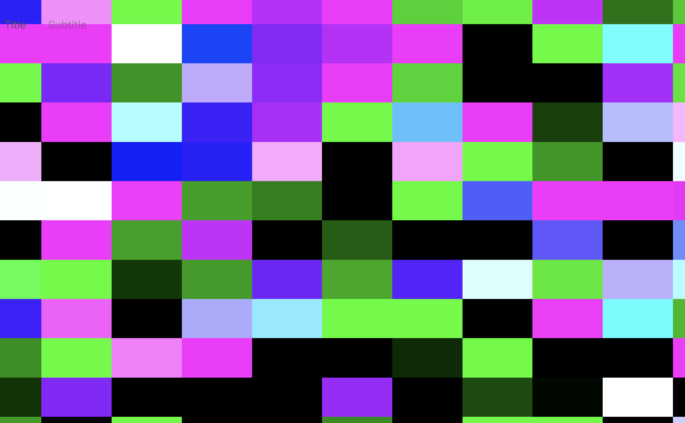
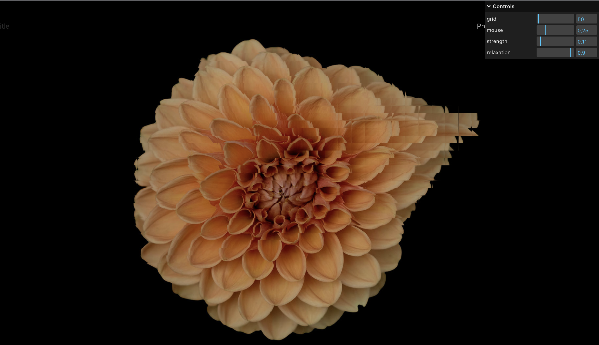

The creative coder’s dream is to rule pixels on their screen. To arrange them in beautiful patterns and do whatever you want with them. Well, this is exactly what we are going to do with this demo. Lets distort and rule pixels with the power of our mouse cursor, just like the developers of amazing Infinite Bad Guy website did!
The scene is the usual, we just create fullscreen image on a screen, so it preserves aspect ratio, and has its “background-size: cover” applied through the glsl shader. So in the end, we have a geometry stretched for the whole viewport, and a little shader like this:
vec2 newUV = (vUv - vec2(0.5))*aspect + vec2(0.5);
gl_FragColor = texture2D(uTexture,newUV);
The whole thing just shows image, no distortions yet.
I hope by this time you know, that any texture in WebGL is basically just numbers corresponding to each pixel’s color.
Three.js has specific API to create your own textures pixel by pixel. It is called, no surprise, DataTexture. So lets create another texture for our demo, with random numbers
const size = rows * columns;
const data = new Float32Array(3 * size);
for(let i = 0; i < size; i++) {
const stride = i * 3;
let r = Math.random() * 255 ;
let r1 = Math.random() * 255 ;
data[stride] = r; // red, and also X
data[stride + 1] = r1; // green, and also Y
data[stride + 2] = 0; // blue
}
this.texture = new THREE.DataTexture(data, width, height, THREE.RGBFormat, THREE.FloatType);
This is heavily based on default example from docs. The only difference is, we are using FloatType texture, so we are not bound only to integer numbers. One of the interesting moments is, that numbers should be between 0 and 255, even though, in the GLSL it will be 0..1 range anyway. You should just keep that in mind, so you are using correct number ranges.
What is also an interesting idea, is that GLSL doesnt really care what the numbers mean in your data structures. It could be both color.rgb, and color.xyz. And thats precisely what we will use here, we dont care about exact color of this texture, we will use it as a distortion for our demo! Just as a nice data structure for GLSL.
But, just to understand better, this is what the texture will look like when you want to preview it:
You see those big rectangles because i picked something like 25x35 DataTexture size, which is really low-res.
Also it has colors, because im using two different random numbers for XY(Red-Green) variables, which results in this.
So now, we could already use this texture as a distortion in our fragment shader:
vec4 color = texture2D(uTexture,newUV);
vec4 offset = texture2D(uDataTexture,vUv);
// we are distorting UVs with new texture values
gl_FragColor = texture2D(uTexture,newUV - 0.02*offset.rg);
So now, let’s make it dynamic! We will need a couple things. First, mouse position and its speed. And also, mouse radius, meaning, at what distance would the mouse distort our image.
First, explanation: On each step of the animation, i will loop through my grid cells aka pixels of DataTexture. And assign some values based on mouse position and speed. Second, im going to relax the distortion. This needs to be done, if user stops moving mouse, the distortion should come to 0.
So, now the code, it is simplified a little, for better understanding to concept:
let data = DataTexture.image.data;
// loop through all the pixels of DataTexture
for (let i = 0; i < rows; i++) {
for (let j = 0; j < cols; j++) {
// get distance between mouse, and current DataTexture pixel
let distance = distanceBetween(mouse, [i,j])
if (distance < maxDistance) {
let index = 3 * (i + this.size * j); // get the pixel coordinate on screen
data[index] = this.mouse.vX ; // mouse speed
data[index + 1] = this.mouse.vY ; // mouse speed
}
}
// slowly move system towards 0 distortion
for (let i = 0; i < data.length; i += 3) {
data[i] *= 0.9
data[i + 1] *= 0.9
}
DataTexture.needsUpdate = true;
A couple of things are added to make it look better, but the concept is here. If you ever worked with particle systems, this is exactly that concept, except our particles never move, we just change some values of particles(distortion inside each big pixel).
I left settings open in the demo, so you can play with parameters and come up with your own unique feel of the animation. Let me know what it inspired you to create!
